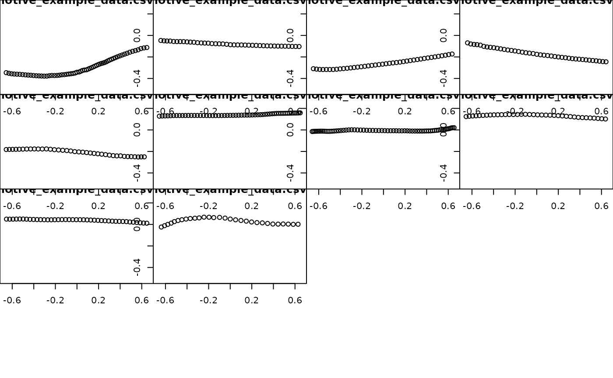

Use LOESS smoothing to fill in gaps of missing data within trajectories in a viewr object
fill_traj_gaps( obj_name, loess_degree = 1, loess_criterion = c("aicc", "gcv"), loess_family = c("gaussian", "symmetric"), loess_user_span = NULL )
Arguments
| obj_name | The input viewr object; a tibble or data.frame with attribute
|
|---|---|
| loess_degree | See "degree" argument of fANCOVA::loess.as() |
| loess_criterion | See "criterion" argument of fANCOVA::loess.as() |
| loess_family | See "family" argument of fANCOVA::loess.as() |
| loess_user_span | See "user.span" argument of fANCOVA::loess.as() |
Value
A viewr object; a tibble or data.frame with attribute
pathviewr_steps that includes "viewr" that now includes new
observations (rows) as a result of interpolation to fill in missing data. A
new column gaps_filled is added to the data to indicate original
data ("No") vs data that have been inserted to fill gaps ("Yes").
Details
It is strongly recommended that the input viewr object be "cleaned"
via select_x_percent() -> separate_trajectories() ->
get_full_trajectories() prior to using this function. Doing so will
ensure that only trajectories with minor gaps will be used in your
analyses. This function will then enable you to interpolate missing data in
those minor gaps.
Interpolation is handled by first fitting a series of LOESS regressions
(via fANCOVA::loess.as()). In each regression, a position axis (e.g.
position_length) is regressed against frame (frame is
x-axis). From that relationship, values of missing position data are
determined and then inserted into the original data set.
See loess.as for further details on parameters.
Author
Vikram B. Baliga
Examples
library(pathviewr) ## Import the example Motive data included in the package motive_data <- read_motive_csv(system.file("extdata", "pathviewr_motive_example_data.csv", package = 'pathviewr')) ## Clean, isolate, and label trajectories motive_full <- motive_data %>% clean_viewr(desired_percent = 50, max_frame_gap = "autodetect", span = 0.95)#>## Interpolate missing data via this function motive_filling <- motive_full %>% fill_traj_gaps() ## plot all trajectories (before) plot_viewr_trajectories(motive_full, multi_plot = TRUE)